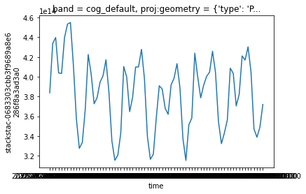

from pystac_client import Client
import stackstac
import rioxarray # noqaCalculate timeseries from COGs
Demonstrates how to aggregate COGs using
pystac_client, rioxarray, and stackstac
Run this notebook
You can launch this notebook in VEDA JupyterHub by clicking the link below.
Launch in VEDA JupyterHub (requires access)
Learn more
Inside the Hub
This notebook was written on the VEDA JupyterHub and as such is designed to be run on a jupyterhub which is associated with an AWS IAM role which has been granted permissions to the VEDA data store via its bucket policy. The instance used provided 16GB of RAM.
See (VEDA Analytics JupyterHub Access)[https://nasa-impact.github.io/veda-docs/veda-jh-access.html] for information about how to gain access.
Outside the Hub
The data is in a protected bucket. Please request access by emailng aimee@developmentseed.org or alexandra@developmentseed.org and providing your affiliation, interest in or expected use of the dataset and an AWS IAM role or user Amazon Resource Name (ARN). The team will help you configure the cognito client.
You should then run:
%run -i 'cognito_login.py'Approach
- Use
pystac_clientto open the STAC catalog and retrieve the items in the collection - Use
stackstacto create anxarraydataset containing all the items cropped to AOI - Calculate the mean for each timestep over the AOI
Declare your collection of interest
You can discover available collections the following ways:
- Programmatically: see example in the
list-collections.ipynbnotebook - JSON API: https://staging-stac.delta-backend.com/collections
- STAC Browser: http://veda-staging-stac-browser.s3-website-us-west-2.amazonaws.com
STAC_API_URL = "https://staging-stac.delta-backend.com/"
collection = "no2-monthly"Discover items in collection for region and time of interest
Use pystac_client to search the STAC collection for a particular area of interest within specified datetime bounds.
china_bbox = [
73.675,
18.198,
135.026,
53.459,
]
datetime = "2000-01-01/2022-01-02"catalog = Client.open(STAC_API_URL)
search = catalog.search(
bbox=china_bbox, datetime=datetime, collections=[collection], limit=1000
)
items = list(search.items())
print(f"Found {len(items)} items")Found 73 itemsRead data
Create an xarray.DataSet using stackstac
# This is a workaround that is planning to move up into stackstac itself
import rasterio as rio
import boto3
session = rio.session.AWSSession(boto3.Session())
gdal_env = stackstac.DEFAULT_GDAL_ENV.updated(
always=dict(session=rio.session.AWSSession(boto3.Session()))
)da = stackstac.stack(search.get_all_items(), gdal_env=gdal_env)
da = da.assign_coords({"time": da.start_datetime})
da<xarray.DataArray 'stackstac-0683303cbb3f9689a8e6286f8a3ad3a0' (time: 73,
band: 1,
y: 1800, x: 3600)>
dask.array<fetch_raster_window, shape=(73, 1, 1800, 3600), dtype=float64, chunksize=(1, 1, 1024, 1024), chunktype=numpy.ndarray>
Coordinates: (12/15)
* time (time) <U19 '2022-01-01T00:00:00' ... '2016-01-01T00:00:00'
id (time) <U37 'OMI_trno2_0.10x0.10_202201_Col3_V4.nc' ... '...
* band (band) <U11 'cog_default'
* x (x) float64 -180.0 -179.9 -179.8 ... 179.7 179.8 179.9
* y (y) float64 90.0 89.9 89.8 89.7 ... -89.6 -89.7 -89.8 -89.9
proj:geometry object {'type': 'Polygon', 'coordinates': [[[-180.0, -90....
... ...
end_datetime (time) <U19 '2022-01-31T00:00:00' ... '2016-01-31T00:00:00'
proj:epsg float64 4.326e+03
proj:bbox object {180.0, -180.0, 90.0, -90.0}
description <U47 'Cloud optimized default layer to display on map'
title <U17 'Default COG Layer'
epsg float64 4.326e+03
Attributes:
spec: RasterSpec(epsg=4326.0, bounds=(-180.0, -90.0, 180.0, 90.0),...
crs: epsg:4326.0
transform: | 0.10, 0.00,-180.00|\n| 0.00,-0.10, 90.00|\n| 0.00, 0.00, 1...
resolution: 0.1![]()
Clip the data to the bounding box for China
# Subset to Bounding Box for China
subset = da.rio.clip_box(*china_bbox)
subset/srv/conda/envs/notebook/lib/python3.9/site-packages/rasterio/windows.py:310: RasterioDeprecationWarning: The height, width, and precision parameters are unused, deprecated, and will be removed in 2.0.0.
warnings.warn(<xarray.DataArray 'stackstac-0683303cbb3f9689a8e6286f8a3ad3a0' (time: 73,
band: 1,
y: 354, x: 614)>
dask.array<getitem, shape=(73, 1, 354, 614), dtype=float64, chunksize=(1, 1, 354, 535), chunktype=numpy.ndarray>
Coordinates: (12/16)
* time (time) <U19 '2022-01-01T00:00:00' ... '2016-01-01T00:00:00'
id (time) <U37 'OMI_trno2_0.10x0.10_202201_Col3_V4.nc' ... '...
* band (band) <U11 'cog_default'
* x (x) float64 73.7 73.8 73.9 74.0 ... 134.7 134.8 134.9 135.0
* y (y) float64 53.5 53.4 53.3 53.2 53.1 ... 18.5 18.4 18.3 18.2
proj:geometry object {'type': 'Polygon', 'coordinates': [[[-180.0, -90....
... ...
proj:epsg float64 4.326e+03
proj:bbox object {90.0, 180.0, -90.0, -180.0}
description <U47 'Cloud optimized default layer to display on map'
title <U17 'Default COG Layer'
epsg float64 4.326e+03
spatial_ref int64 0
Attributes:
spec: RasterSpec(epsg=4326.0, bounds=(-180.0, -90.0, 180.0, 90.0),...
resolution: 0.1![]()
Select a band of data
There is just one band in this case, cog_default.
# select the band default
data_band = da.sel(band="cog_default")Aggregate the data
Calculate the mean at each time across the whole dataset. Note this is the first time that the data is actually loaded.
# Average over entire spatial bounding box for each month
means = data_band.mean(dim=("x", "y")).compute()means.plot()